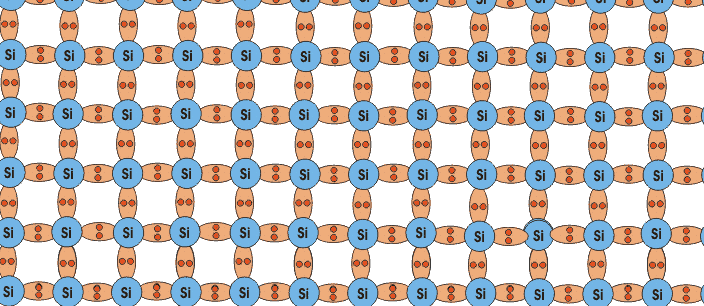

Intrinsic Silicon
A pure semi conductors material which has impurity is do pent atom and no lattice defects is known as intrinsic silicon. The electrical conductivity of this type of silicon is entirely dependent on thermally generated carrier.
Silicon is a very important element semiconductor. Silicon is a group IV material. In its outer orbit it has four valance electrons which are held by covalent bonds with the valance electrons of four nearest silicon atom. These valance electrons are not available for electricity. So, at OK intrinsic semi conductor behaves like an insulator. When temperature rises some valance electrons break covalent bonds thermal energy. This vacancy in the band caused by a free electron creates a hole. The electrons gain sufficient energy to jump to conduction band from valance band and leave a hole in the valance band. This energy is equal to 1.2 ev in room temperature (at 300K) which is equal to the band gap energy.
In the intrinsic silicon crystal, the no of holes is equal to the no. of free electrons. New electrons whole pairs are generated by gaining thermal energy but at the same time some are lost due to recombination.
In equilibrium condition, the electron concentration and the hole concentration p are equal and they are equal to the intrinsic carrier concentration of silicon nickel i.e, n = p = ni. The atomic structure is shown below.

Extrinsic Silicon
A pure semiconductor material having impurity in its crystal is known as extrinsic silicon.
Intrinsic semiconductor can be turned in to extrinsic semiconductor when it is doped with controlled amount of dopants. It is doped with donor atom (group V elements) it becomes n-type semiconductor. And it is doped with acceptor atoms (group III elements) it becomes p-type semiconductor.
Let a small amount of group V element is added to an intrinsic semiconductor crystal. The examples of group V elements are p, as sb, etc. They have 5 valance electrons. When they displace a Si atom, the 4 valance electrons made co-valance bonds with neighboring atoms leaving some free electron. The energy necessary for silicon this purpose is about 0.05 ev. This kind of impurity is named as donor. The silicon known as n- type semiconductors as the electrons are negative charged particles.
The Fermi energy level moves closer to the conduction band in the n-type semiconductors. Here the no. of free electrons is increased over intrinsic concentration of electrons and no. of holes is decreased over intrinsic hole concentration. Electrons are majority charge carriers.
If a small amount of group III elements is added to a intrinsic semiconductor crystal, then they displace a silicon atom, group III elements like AI,B, IN have three valance electrons. These three electrons make covalent band with neighboring atoms creating a hole. These kinds of impurity atoms known as acceptors. The semiconductor in known as p-type semiconductor as the hole is assumed to be positively charged.
The Fermi energy level mover down, closer to the valance bond in p-type semiconductors. Here the number of holes is increased and the number of electrons is decreased over the intrinsic carrier concentration of silicon. In p-type semiconductors holes are the majority charge carriers.
Intrinsic Carrier Concentration of Silicon
When an electron jumps from valance band to conduction band because of thermal excitation, free carriers are created in both bands-electrons in conduction band and holes in valance band. The concentration of these carriers is known as intrinsic carrier concentration. Practically in pure or intrinsic silicon crystal. The no. of holes p. They are equal to intrinsic carrier concentration ni.
Therefore, n = p =ni
The no. of these carriers depends upon the band gap energy. For silicon the band gap energy is 1.2 ev at 298°K intrinsic carrier concentration in silicon increases with the increase of temperature.
Intrinsic carriers concentration in silicon is given by,
ni = 9.38 X 1019(T/300)2exp(- 6884/T)
Here T = temperature
The intrinsic carrier concentration at 300K is 1.01 X 1010 cm-3. But the previously accepted value is 1.5 X 1010 cm-3.
 by
by